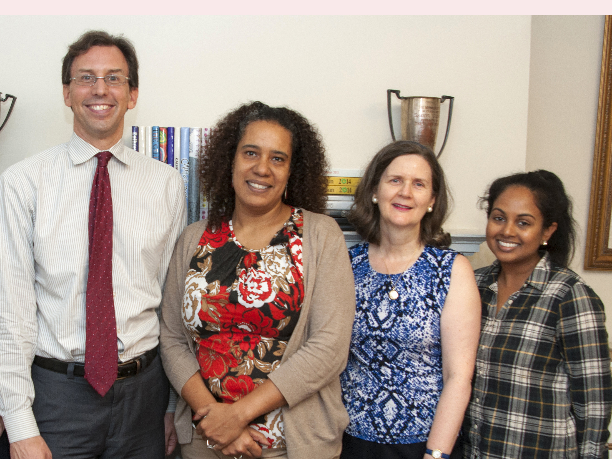
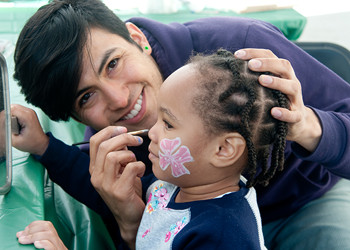
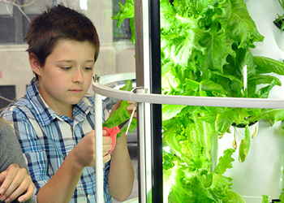
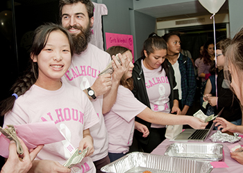

Calhoun Admissions
placeholder
Contact:
andrew.hume@calhoun.org
Calhoun Community Service
In School Opportunities:




Graduation Requirements
The Calhoun School requires that students who entered Calhoun at 9th grade complete a minimum of 60 hours of (non-credited) community service prior to graduation (visit the Community Service Opporrtunities page page of the website for ideas). For further information about the program or for students to schedule an appointment, contact the Director of Community Service.At least 30 hours of the required 60 hours of service must be performed at an outside agency. Students entering Calhoun after the 9th grade are required to complete a proportion of the hours of service (10th grade = 45 hours; 11th grade = 30 hours; 12th grade = 15 hours). The Community Service can take place during community service elective courses, free periods, after school, on weekends and over the summer. The service must not involve any form of monetary compensation (except for travel expenses, if provided). Students may choose the type of service they prefer and the times they wish to serve, as long as the choices are appropriate for the community agency. In order to assure proper credit for service work, the placement must be approved by the Director of the Community Service Program and must be at a non‐profit organization. Students are evaluated by the community agency on the basis of regular attendance, cooperation, responsibility, initiative and the quality of work with the agency staff and clients. A report on community service is included in a student's final progress reports at the end of each mod. Students should report any problems with their community service placement to the Director as soon as possible. The Director will assist students in resolving the problems.